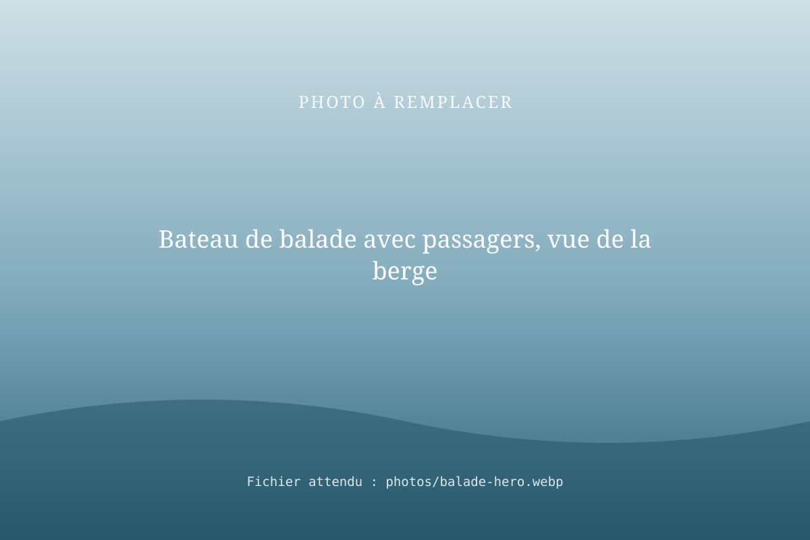
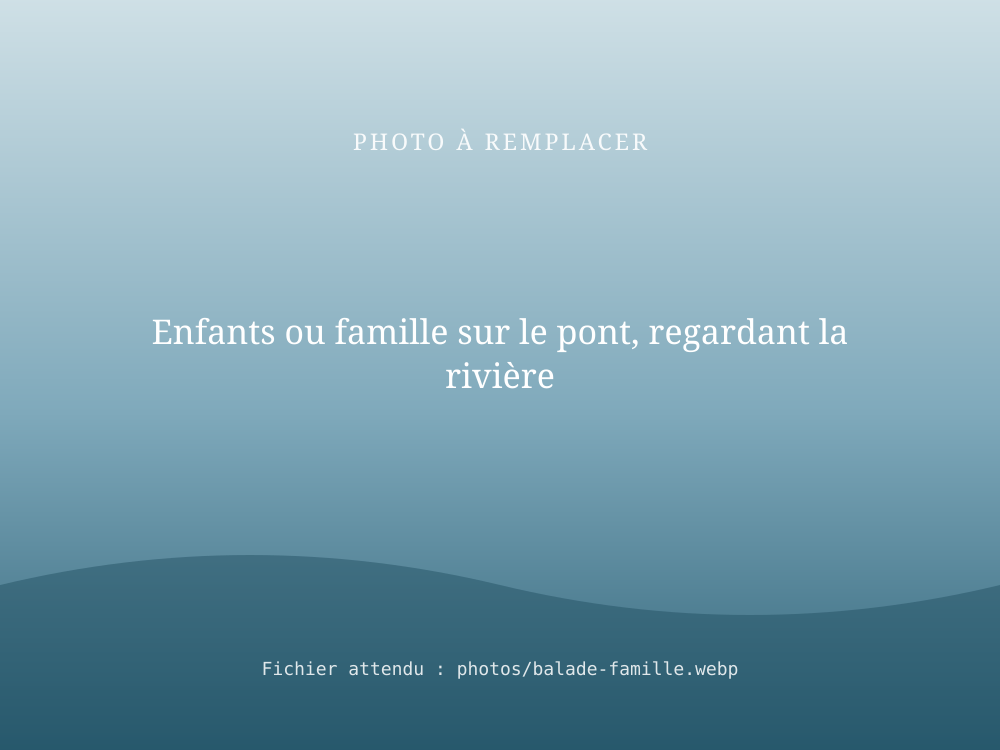

Balade en bateau sur la Seine et la Marne, à bord du Seine et Marne
Le Seine et Marne est le bateau de RivesEnRêves : 150 passagers, pour des balades sur la Seine et la Marne. On peut aussi le louer en entier pour un mariage, un séminaire ou tout autre événement.

Le Seine et Marne est actuellement en travaux. Contactez-nous pour connaître la date de reprise des balades et réserver dès maintenant votre événement.
Le bateau Seine et Marne
- 150 passagers : de la sortie en famille au grand événement.
- Un pont supérieur ouvert, aménagé de tables et en partie ombragé, pour profiter du paysage.
- Un espace intérieur vitré, pour naviguer à l'abri en gardant la vue sur l'eau.
- La Seine et la Marne comme terrain de jeu.
- Un commandant qualifié : Joël Le Mercier, titulaire du permis fluvial, de l'extension grande plaisance et de l'attestation spéciale passagers.
À bord
- Un bar et une cuisine, pour vos boissons, vos repas ou votre traiteur ;
- des sanitaires ;
- une sonorisation, pour la musique, les discours et les animations ;
- un accès aux personnes à mobilité réduite.
Au fil de la balade
Berges boisées, saules pleureurs, villages et ouvrages de navigation : la Seine et la Marne se découvrent au rythme du bateau, depuis le pont ou à l'abri du salon. Une sortie calme, à partager en famille, entre amis ou en groupe.

Location et privatisation
Louer le Seine et Marne pour votre événement
Jusqu'à 150 invités sur l'eau, sur la Seine ou la Marne : un cadre que personne n'oublie.
Mariages
Cocktail, vin d'honneur, repas ou soirée à bord : une réception au fil de l'eau pour vos invités.
Séminaires et entreprises
Séminaire, réunion, soirée d'entreprise, sortie d'équipe ou réception de clients, dans un cadre qui change du bureau.
Autres événements
Anniversaire, fête de famille, association, comité d'entreprise, événement culturel : parlons de votre projet.
Infos pratiques
| Bateau | Seine et Marne |
|---|---|
| Capacité | 150 passagers |
| Navigation | La Seine et la Marne |
| Équipements | Bar, cuisine (traiteur possible), sanitaires, sonorisation |
| Accessibilité | Accessible aux personnes à mobilité réduite |
| Disponibilité | Actuellement en travaux : réservations pour la reprise sur demande |
| Lieu d'embarquement | [À COMPLÉTER] |
| Durée des balades | [À COMPLÉTER] |
| Tarifs | [À COMPLÉTER] · Événements : sur devis |
Questions fréquentes
Combien de personnes peut accueillir le bateau Seine et Marne ?
Le Seine et Marne est un bateau de 150 passagers. Il convient aussi bien aux balades ouvertes au public qu'aux événements privés de grande taille.
Où navigue le bateau Seine et Marne ?
Sur la Seine et sur la Marne. Le parcours et le point d'embarquement sont précisés lors de la réservation : [À COMPLÉTER : point(s) d'embarquement].
Peut-on louer un bateau pour un mariage sur la Seine ou la Marne ?
Oui. Le Seine et Marne peut être privatisé pour un mariage, avec jusqu'à 150 invités à bord. Indiquez la date et le nombre de convives dans votre demande.
Peut-on organiser un séminaire d'entreprise sur un bateau ?
Oui. Le Seine et Marne se loue pour des séminaires, des fêtes d'entreprise et des sorties d'équipe, sur la Seine et la Marne. Précisez le format souhaité (réunion, cocktail, repas, croisière) dans votre demande.
Les balades sont-elles ouvertes en ce moment ?
Le Seine et Marne est actuellement en travaux. Contactez-nous pour connaître la date de reprise des balades et réserver dès maintenant votre événement.
Le bateau Seine et Marne est-il équipé pour un mariage ou un séminaire ?
Oui : le Seine et Marne dispose d'un bar, d'une cuisine (repas à bord ou traiteur), de sanitaires et d'une sonorisation. Il est accessible aux personnes à mobilité réduite.
Faut-il un permis pour participer à la balade ?
Non. Vous êtes passager : la conduite du bateau est assurée par l'équipage de RivesEnRêves, emmené par Joël Le Mercier, commandant de bord titulaire de l'attestation spéciale passagers.
Une balade ou un événement à bord ?
Dites-nous la date, le nombre de personnes et l'occasion : nous revenons vers vous avec les disponibilités et un devis.